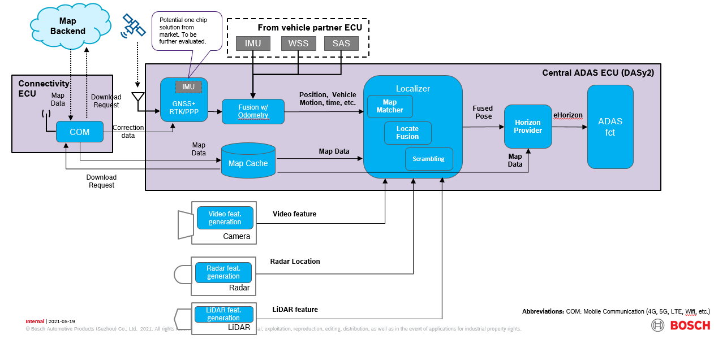

Map & Loc. Architecture for A-sample
Detailed information refer to: [Approved for A-sample development] DDD Map & Loc. Architecture for CN market
[Decision]
Overall high level architecture:

Standalone IMU component (e.g.: MMP2) to be used as main IMU signal source for MapLoc (Option A.2).
No separated IMU sensor on DASy PCB planned.
Continue technical investigation and supplier selection for GNSS module. Further check technical feasibility to use GNSS module with IMU integrated in chip ("one chip" solution for GNSS based Loc.).